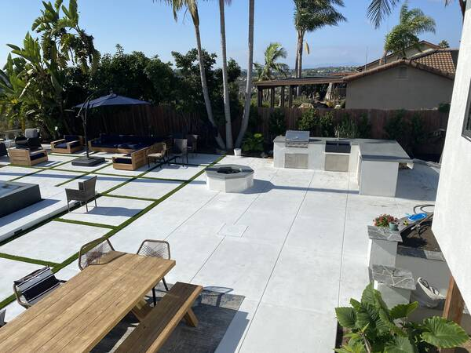

Custom Outdoor Living Spaces in San Diego & North County
Patios, outdoor kitchens, fire features, BBQ islands, seating walls and pool surrounds — designed and built by one local crew. No subcontractors, no surprises, no compromises.

Everything you need to live outside — built by one crew.
From a quiet patio retreat to a full backyard transformation, every element of your outdoor living space is designed and constructed in-house. One point of contact, one timeline, one standard of finish.
Custom Patios
Stamped, stained, or broom-finished concrete patios built for San Diego weather and the way you actually entertain.
Outdoor Kitchens & BBQ Islands
Built-in grills, side burners, refrigeration, prep counters and bar seating — all wrapped in stone, stucco, or tile.
Explore Outdoor Kitchens →Fire Pits & Fireplaces
Gas fire pits, wood-burning fireplaces, and fire-and-water features that turn the patio into a year-round room.
Seating & Retaining Walls
Built-in seat walls, planters and engineered retaining walls that shape the space and add usable square footage.
Pool Decks & Surrounds
Slip-resistant decorative pool decks, coping, and integrated drainage that complete the backyard.
Pergolas, Pavers & Lighting
Shade structures, paver walkways, low-voltage landscape lighting — finishing touches that tie it all together.
A premium outdoor build, without the contractor headaches.
We've been shaping San Diego backyards since 1993. Our work is 100% referral-based for a reason — every detail is handled by people who answer to the same name on the truck.
All trades in-house
Concrete, masonry, demo, and prep are all run by our own crew. No subs, no finger-pointing, no schedule slip.
Fixed start & finish dates
Your bid includes the exact day we begin and the exact day we wrap. Most outdoor living buildouts complete in 3–6 weeks on site.
Fixed pricing, no surprises
Your bid is locked in before we start. No vague ballparks, no change orders, no surprises — final invoice matches the bid.
Designed for San Diego
Coastal salt air, slope drainage, hillside grading, HOA-friendly finishes — we build for the local conditions, not a national catalog.
Picture your backyard, finished by spring.
Schedule a free on-site walkthrough with the owner. We measure, assess, and quote your project — no pressure, no obligation.
Built to last. Designed to impress.
From outdoor living spaces and stamped concrete to retaining walls and custom stonework — every project built by our crew, start to finish.
View Recent ProjectsA real backyard, a real review.
"John improved our plans and helped make our backyard more efficient. His crew is professional, hard-working and dedicated. We had a holiday party shortly after the job was completed and got so many compliments — we love the BBQ."
What homeowners ask before we break ground.
Let's design your San Diego outdoor living space.
No sales pitch. No pressure. A free on-site assessment and quote — that's it.
Fast response from our local San Diego team — North County, Coastal, Inland, South Bay and everywhere in between.